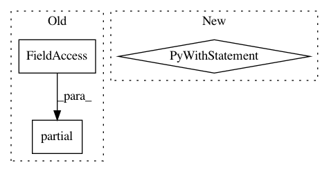

93a66cae06444e5a2afdeaf81d41ae8b2671ff51,tests/python/pants_test/backend/python/tasks/test_python_binary_integration.py,PythonBinaryIntegrationTest,test_zipsafe_caching,#PythonBinaryIntegrationTest#,49
Before Change
zipsafe_target_tmpl = "python_binary(sources=["main.py"], zip_safe={})"
with self.caching_config() as config, self.mock_buildroot() as buildroot, buildroot.pushd():
build = functools.partial(
self.run_pants_with_workdir,
command=["binary", test_project],
workdir=os.path.join(buildroot.new_buildroot, ".pants.d"),
config=config,
build_root=buildroot.new_buildroot,
)
buildroot.write_file(test_src, "")
// Create a pex from a simple python_binary target and assert it has zip_safe=True (default).
After Change
self.assert_pex_attribute(test_pex, "zip_safe", True)
// Simulate a user edit by adding zip_safe=False to the target and check the resulting pex.
with self.temporary_file_content(
test_build, zipsafe_target_tmpl.format("False").encode()
):
self.assert_success(build())
self.assert_pex_attribute(test_pex, "zip_safe", False)
// Simulate a user edit by adding zip_safe=True to the target and check the resulting pex.
with self.temporary_file_content(
test_build, zipsafe_target_tmpl.format("True").encode()
):
self.assert_success(build())
In pattern: SUPERPATTERN
Frequency: 3
Non-data size: 3
Instances
Project Name: pantsbuild/pants
Commit Name: 93a66cae06444e5a2afdeaf81d41ae8b2671ff51
Time: 2020-05-22
Author: stuhood@gmail.com
File Name: tests/python/pants_test/backend/python/tasks/test_python_binary_integration.py
Class Name: PythonBinaryIntegrationTest
Method Name: test_zipsafe_caching
Project Name: pantsbuild/pants
Commit Name: 427bd0f33076c2595dceb0dfd5bca00a06f95498
Time: 2014-07-10
Author: john.sirois@gmail.com
File Name: src/python/pants/backend/jvm/tasks/jar_create.py
Class Name: JarCreate
Method Name: execute
Project Name: ray-project/ray
Commit Name: 3c44c0d3e4b5b764ab993bca11a1c58f1e43ed2c
Time: 2020-12-10
Author: ed.nmi.oakes@gmail.com
File Name: python/ray/serve/tests/test_long_poll.py
Class Name:
Method Name: test_async_client